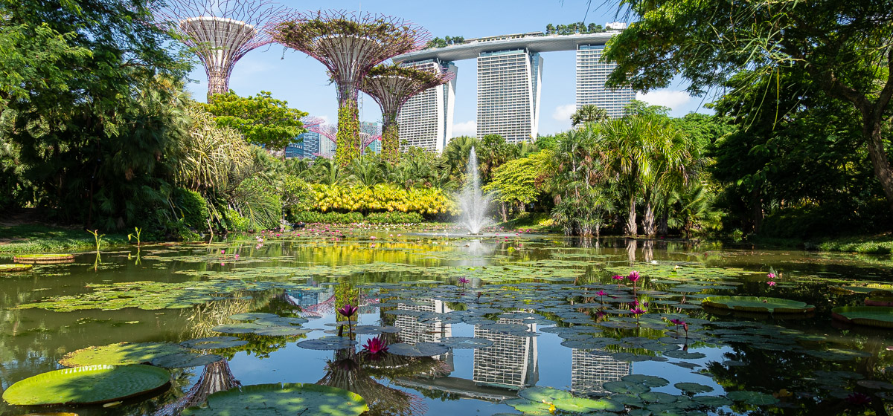

GARDENS BY THE BAY

About Gardens By the Bay
Gardens by the Bay is an independent organisation responsible for developing and managing one of Asia’s foremost garden destinations.
The Gardens is led by a multidisciplinary team of professionals who have been involved in the greening of Singapore and had worked alongside international and local experts to develop the Gardens. It has an in-house team of skilled landscape designers, horticulturists, arborists, engineers, plant health, garden and turf management experts, as well as plant research and orchid breeding professionals, who leverage on the extensive global network of plant sources cultivated during the development days, to continuously curate and grow the Gardens.The Gardens is led by a multidisciplinary team of professionals who have been involved in the greening of Singapore and had worked alongside international and local experts to develop the Gardens. It has an in-house team of skilled landscape designers, horticulturists, arborists, engineers, plant health, garden and turf management experts, as well as plant research and orchid breeding professionals, who leverage on the extensive global network of plant sources cultivated during the development days, to continuously curate and grow the Gardens.
Navigating the Gardens

What to Do
GUIDED TOURS
Package Gardens Tour with Garden Cruiser
 Back-Of-House Add On Tour
Back-Of-House Add On Tour
 SELF-GUIDED TOURS
SELF-GUIDED TOURS